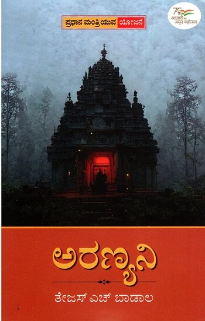
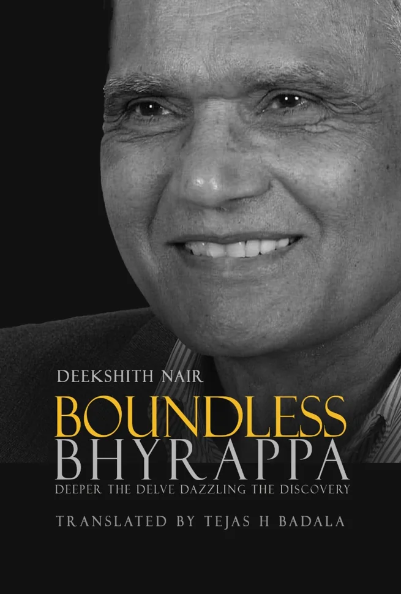
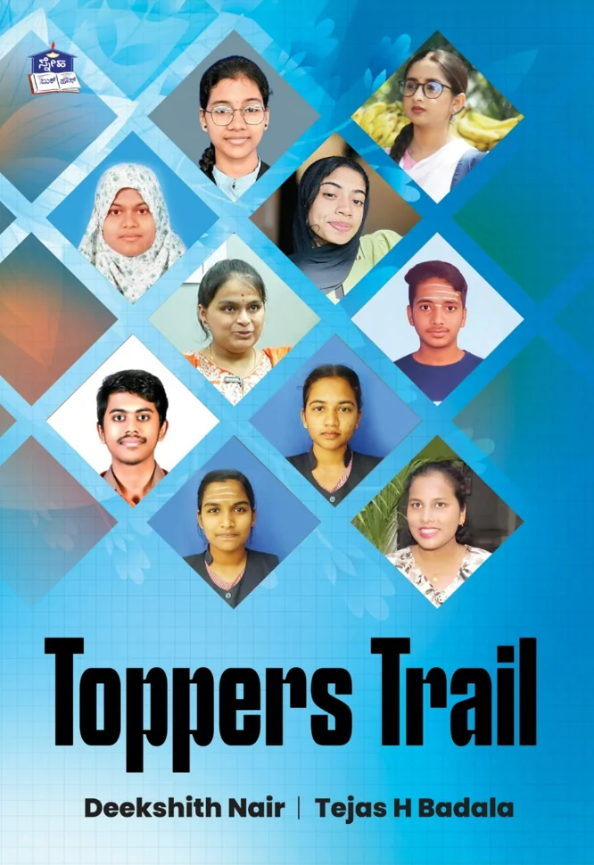

National Book Trust, India
Araṇyani
A Kannada novel about resistance to British rule in the forests of the Western Ghats.
Inside the book
ತೇಜಸ್ ಎಚ್ ಬಾಡಾಲ
I write Kannada fiction. At RV University, I study intellectual property and technology law.
National Book Trust, India
A Kannada novel about resistance to British rule in the forests of the Western Ghats.
Inside the book
RV University · Bengaluru
My postgraduate work brings intellectual property and technology law together.
Open the law fileKannada to English
I translated Deekshith Nair’s books on the life of S. L. Bhyrappa and the stories of twenty-five students.
See the translations
